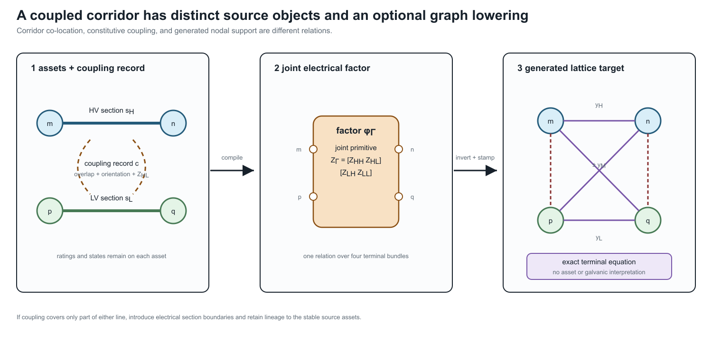

A coupled multi-voltage corridor
Page status: literature-backed representation and exact fixed-linear lowering case with an executable scalar certificate; a geometry-derived multi-voltage certificate and decision-preservation tests remain follow-on work.
Two circuits can share towers or a right of way without sharing buses, terminals, or nominal voltage. Following the line-modeling literature, they are then physically parallel sections: spatially co-located, but not necessarily parallel edges in a bus multigraph. Here physical qualifies the shared route; it does not mean a transfer corridor or electrical interchangeability. Electromagnetic coupling nevertheless makes their longitudinal voltage drops and currents part of one constitutive relation.
This case separates three objects that a one-line diagram can make easy to conflate:
- two identified line assets with their own ratings and states;
- one joint electromagnetic factor over the coupled electrical sections; and
- an optional ordinary-edge lattice that realizes the same fixed-linear terminal equation.

The right-hand lattice is an equation target. Its cross-voltage edges are not conductors, transformer windings, galvanic connections, or additional assets. Their weights can be signed or general complex quantities even when the joint primitive is reciprocal and passive as a whole.
Physical parallelism is not visible in the bus multigraph
Let the high-voltage section $s_{\mathrm H}$ join buses $m$ and $n$, and let the lower-voltage section $s_{\mathrm L}$ join buses $p$ and $q$. The endpoint pairs need not agree:
\[\partial(s_{\mathrm H})=\{m,n\}, \qquad \partial(s_{\mathrm L})=\{p,q\}.\]
The two sections may even belong to otherwise galvanically disconnected voltage systems. Their spatial co-location is therefore an asset/construction relation, while their mutual impedance is a constitutive relation. Neither is implied by the high-level bus–branch incidence map.
This is a limitation of that projection, not of graph representation in general. Refining each line asset into oriented conductor or wire sections makes the relevant granularity available. A separate section-coupling graph can then use those refined section identities as vertices and mutual-coupling records as edges. It captures spatial and constitutive relations that are absent from the bus multigraph, but it is not the original line-asset graph and its coupling edges are not galvanic connections. Nor is it the standard line graph of the bus multigraph: line-graph adjacency means that source edges share an endpoint, whereas section-coupling adjacency means that refined sections participate in a declared electromagnetic coupling relation.
A later weighted-lattice lowering is different again. Its vertices are terminal-voltage coordinates and its edges realize the assembled equation. That graph captures the electrical effect of coupling, not the physical parallelism itself; its generated edges are neither source line objects nor physical wires. The representation progression is therefore
line assets and bus attachments
-> refined conductor sections plus a coupling relation
-> optional generated equation edges.For data and prose, this book uses the following terms:
- physically parallel sections overlap spatially on common towers, poles, trench, or right of way for a declared interval;
- a mutual-coupling record relates two oriented sections and carries their cross blocks, coordinate maps, overlap, and provenance;
- a coupling group $\Gamma$ is a connected component of the resulting section-coupling relation; and
- the joint primitive $\mathbf Z_\Gamma$ is assembled for the whole group before conversion to an admittance form.
This ownership rule matters. Storing the same mutual block redundantly in two line records creates update and orientation ambiguity. Inverting each self block separately is also not equivalent to inverting the assembled joint matrix.
The joint series primitive
Let the two circuits have ordered conductor spaces of dimensions $r_{\mathrm H}$ and $r_{\mathrm L}$; the dimensions need not agree. In physical voltage and current coordinates, choose orientations $m\rightarrow n$ and $p\rightarrow q$ and write
\[\begin{bmatrix} \Delta\mathbf v_{\mathrm H}\\ \Delta\mathbf v_{\mathrm L} \end{bmatrix} = \underbrace{ \begin{bmatrix} \mathbf Z_{\mathrm{HH}} & \mathbf Z_{\mathrm{HL}}\\ \mathbf Z_{\mathrm{LH}} & \mathbf Z_{\mathrm{LL}} \end{bmatrix}}_{\mathbf Z_\Gamma} \begin{bmatrix} \mathbf i_{\mathrm H}\\ \mathbf i_{\mathrm L} \end{bmatrix}.\]
Here $\mathbf Z_{\mathrm{HL}}$ can be rectangular. For a reciprocal model in compatible physical coordinates, $\mathbf Z_{\mathrm{LH}}=\mathbf Z_{\mathrm{HL}}^{\mathsf T}$. Ground-return, shield, neutral, bundle, transposition, and reduction assumptions belong to the provenance of these blocks, not to the bus graph.
This form covers the series part of a lumped steady-state model. A nominal- $\pi$ or general fixed-linear terminal factor can additionally have full shunt blocks, including capacitive coupling between circuits. Distributed and frequency-dependent multiconductor models require a frequency-indexed or dynamic terminal relation; they should not be relabelled as this fixed series primitive without a separate approximation contract.
Exact nodal stamping
First take one scalar conductor on each circuit. Stack the terminal voltages as
\[\mathbf u= \begin{bmatrix}V_m&V_n&V_p&V_q\end{bmatrix}^{\mathsf T}, \qquad \mathbf A_\Gamma= \begin{bmatrix} 1&-1&0&0\\ 0&0&1&-1 \end{bmatrix}.\]
Then $\Delta\mathbf v=\mathbf A_\Gamma\mathbf u$. If $\mathbf Z_\Gamma$ is nonsingular, define
\[\mathbf Y_\Gamma =\mathbf Z_\Gamma^{-1} = \begin{bmatrix} y_{\mathrm H}&y_{\mathrm M}\\ y_{\mathrm M}&y_{\mathrm L} \end{bmatrix}.\]
The terminal-current stamp is
\[\mathbf i^{\mathrm{inj}} =\mathbf A_\Gamma^{\mathsf T}\mathbf Y_\Gamma \mathbf A_\Gamma\mathbf u,\]
with nodal block
\[\mathbf Y^{\mathrm N}_\Gamma= \begin{bmatrix} y_{\mathrm H}&-y_{\mathrm H}&y_{\mathrm M}&-y_{\mathrm M}\\ -y_{\mathrm H}&y_{\mathrm H}&-y_{\mathrm M}&y_{\mathrm M}\\ y_{\mathrm M}&-y_{\mathrm M}&y_{\mathrm L}&-y_{\mathrm L}\\ -y_{\mathrm M}&y_{\mathrm M}&-y_{\mathrm L}&y_{\mathrm L} \end{bmatrix}.\]
This is the classical building-block assembly for mutually coupled branches [10, 11]. The same construction extends blockwise to multiconductor circuits.
The generated lattice
For reciprocal $\mathbf Z_\Gamma$, the inverse $\mathbf Y_\Gamma$ is complex symmetric, so an undirected weighted graph is sufficient. A nonreciprocal primitive requires a directed or more general factor target. Under the book's weighted-Laplacian convention, the scalar nodal stamp is realized by six ordinary edges:
The following table is a generated scalar equation realization, not a line inventory. If copied out of context, every row must retain its generated_from provenance and asset_interpretation = false; the cross-voltage rows are not conductors or galvanic connections.
| generated endpoint pair | weight |
|---|---|
| $m--n$ | $y_{\mathrm H}$ |
| $p--q$ | $y_{\mathrm L}$ |
| $m--p$ | $-y_{\mathrm M}$ |
| $m--q$ | $y_{\mathrm M}$ |
| $n--p$ | $y_{\mathrm M}$ |
| $n--q$ | $-y_{\mathrm M}$ |
The count six is scalar-specific. In a coordinate-expanded block realization, the two cross pairs become up to $r_{\mathrm H}r_{\mathrm L}$ cross-coordinate pairs before sparsity is considered, and the self blocks can require further within-circuit coordinate edges.
The sign pattern depends on the two stored orientations. Reversing one section changes the sign of its mutual entries and permutes the terminal labels; it does not change the physical relation when the coordinate maps are transformed consistently.
This proves a scoped statement: an ordinary weighted graph can exactly realize the fixed-linear terminal equation when the joint admittance exists and the target edge library admits the required weights. It does not prove that the lattice is the source asset graph. The source branch currents are recovered through
\[\begin{bmatrix} i_{\mathrm H}\\i_{\mathrm L} \end{bmatrix} =\mathbf Y_\Gamma\mathbf A_\Gamma\mathbf u,\]
and member limits, outages, measurements, and decisions must remain attached to those recovered source quantities.
The certificate establishes no OPF, protection, limit, or discrete-state equivalence. Signed generated weights can also violate positivity or convexity assumptions made by graph-based solvers. A decision study must keep the source constraints and decisions, use the current recovery map, and prove its own preservation contract; that test has not yet been run.
If $\mathbf Z_\Gamma$ is singular, or if a queried current/state cannot be eliminated, a tableau or direct joint-factor formulation is the faithful target. Singularity is a refusal condition for this admittance/lattice branch, not evidence that the coupled section is invalid. Consequently the lattice cannot be the canonical source representation: a canonical model must still represent a physically admissible coupled section when this optional lowering target is undefined.
Different voltage bases
The joint primitive is simplest in physical units. If per-unit coordinates are required, use a power-dual scaling over the complete coupling group rather than converting the two self blocks independently. With one common power base $S_{\mathrm b}$ and compatible phase-voltage conventions, the mutual impedance base between circuits $a$ and $b$ is
\[Z_{\mathrm b,ab} =\frac{U_{\mathrm b,a}U_{\mathrm b,b}}{S_{\mathrm b}}.\]
The corresponding mutual-admittance base is its reciprocal. This cross-base rule preserves reciprocity under a common power base; arbitrary independent power bases need an explicit left/right coordinate transformation. Multi- circuit, multi-voltage line studies use this product-voltage base rather than either circuit's self-impedance base [12].
Partial overlap and state
Coupling is often present over only part of each line. The electrical model must then introduce section boundaries where the coupling starts or ends. The generated section nodes are not new line assets: a lineage map relates every section back to its stable source line. Smearing one mutual value over the uncoupled lengths can change fault currents and relay conclusions [13].
Opening a circuit terminal also does not automatically delete the coupling record. An open or grounded out-of-service conductor can still have induced voltage or current, depending on its terminal constraints and the retained series/shunt model. The coupling relation becomes inactive only when the declared physical or study state removes that interaction; ordinary breaker opening changes a boundary constraint.
Information-model precedent
Engineering exchange and analysis models commonly retain coupling as a separate relation keyed to both lines. CIM's $MutualCoupling$ class carries zero-sequence mutual parameters and four distances locating the coupled regions [14]. PowSyBl exposes a network-level line- coupling extension with two line identities and section intervals [15]. PowerWorld's sequence format similarly records two branch identities, dot convention, mutual impedance, and start/end fractions [16].
These precedents are narrower than the book's source contract: they are often zero-sequence and short-circuit oriented rather than full phase-coordinate series-and-shunt models. Their important architectural lesson is nevertheless general: coupling is a relation between identified sections, not an intrinsic scalar label owned independently by either line.
Pedagogical and evidence boundary
Yan and Saha study the concrete Australian case of an 11 kV three-wire circuit and a 415 V four-wire circuit sharing poles. Their phase-coordinate current-injection model shows that cross-voltage coupling can materially affect low-voltage magnitude and unbalance under plausible geometry and loading [17]. Kersting gives the complementary same-voltage derivation for physically parallel distribution circuits, including series and shunt coupling [18].
The generated experiments/generated/coupled-corridor-lattice-witness.json certificate checks joint-matrix inversion, the six-edge lattice stamp, orientation covariance of the mutual term and rebuilt edge table, source-current recovery, cross-voltage per-unit round trips, signed generated weights, and singular refusal. It does not yet reproduce either paper's numerical results or test a limit-, protection-, state-, or decision-preservation contract. The source-relation convention is registered as COUPLED-CORRIDOR-001, and the exact fixed-linear lattice lowering as COUPLED-CORRIDOR-002. The next executable tranche should add:
- a deterministic three-wire/four-wire fixture with physical-unit and per-unit round trips; and
- a geometry-derived 11 kV/415 V case with partial-overlap and open/grounded state probes.
Reproduction
julia --project=experiments experiments/run_coupled_corridor_lattice.jl
julia --project=experiments experiments/test/coupled_corridor_lattice.jl